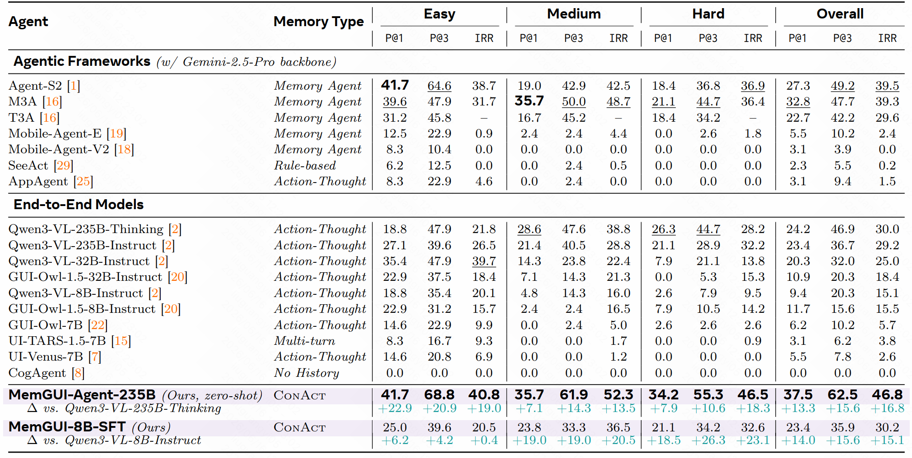
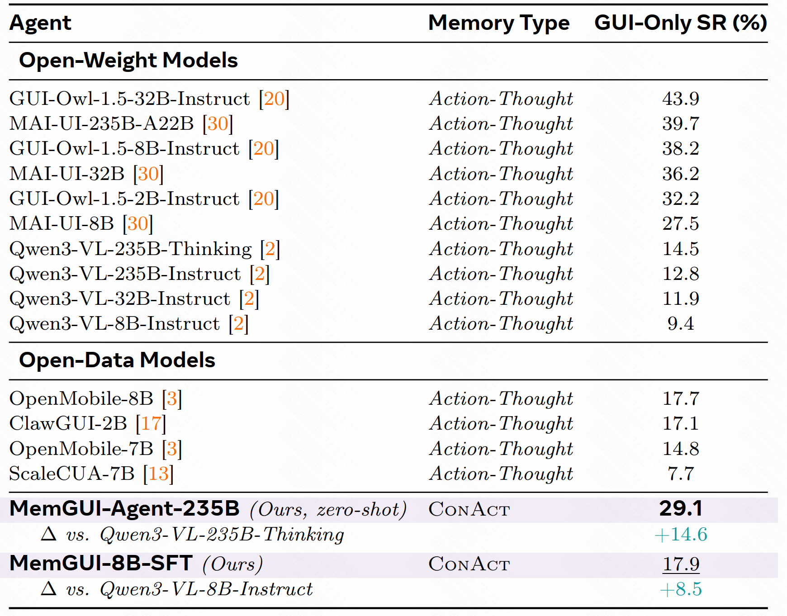

MemGUI-Bench
8B Base
ReAct-style Qwen3-VL-8B-Instruct trajectory.
Long-horizon mobile GUI agents
1Zhejiang University 2Kuaishou Technology
MemGUI-Agent is an end-to-end mobile GUI agent that instantiates ConAct, a Context-as-Action paradigm for folding action history, updating UI memory, and executing the next GUI action in one structured policy output.
Project Video
The comparison video summarizes four base-vs-MemGUI trajectories; the remaining eight videos show the detailed single-trajectory demos.
Four side-by-side comparisons covering MemGUI-Bench and MobileWorld with 8B and 235B backbones.
ReAct-style Qwen3-VL-8B-Instruct trajectory.

MemGUI-8B-SFT trajectory on the same benchmark setting.

Qwen3-VL-235B-Thinking with ReAct-style prompting.

Zero-shot ConAct with unchanged Qwen3-VL-235B-Thinking weights.

Out-of-distribution mobile GUI task with the 8B baseline.

MemGUI-8B-SFT transfer behavior on MobileWorld GUI-Only.

Qwen3-VL-235B-Thinking baseline on MobileWorld.

Zero-shot ConAct transfer on MobileWorld GUI-Only.
01 / Main Results
MemGUI-Agent improves both zero-shot 235B and trained 8B settings on long-horizon mobile GUI benchmarks.

Benchmark Tables


| Agent | Setting | MemGUI-Bench Pass@1 | MemGUI-Bench Pass@3 | IRR |
|---|---|---|---|---|
| Qwen3-VL-8B-Instruct | ReAct-style baseline | 9.4 | 20.3 | 15.1 |
| MemGUI-8B-SFT | Trained on MemGUI-3K | 23.4 | 35.9 | 30.2 |
| Qwen3-VL-235B-Thinking | ReAct-style baseline | 24.2 | 46.9 | 30.0 |
| MemGUI-Agent-235B | Zero-shot ConAct, weights unchanged | 37.5 | 62.5 | 46.8 |
02 / Method
Instead of carrying an ever-growing raw transcript, MemGUI-Agent makes context updates explicit and executable inside each model response.

Compresses completed interaction spans while preserving task-relevant progress.
Stores persistent UI facts such as names, prices, values, and form state.
Keeps local interaction continuity for the next GUI action.
03 / Dataset and Case Study
MemGUI-3K supplies full ConAct annotations for supervised training and offline skill analysis; the case study visualizes the resulting long-horizon behavior.


04 / Release
05 / BibTeX
The arXiv link will be added after upload.
@article{memguiagent2026,
title = {MemGUI-Agent: An End-to-End Long-Horizon Mobile GUI Agent with Proactive Context Management},
year = {2026}
}